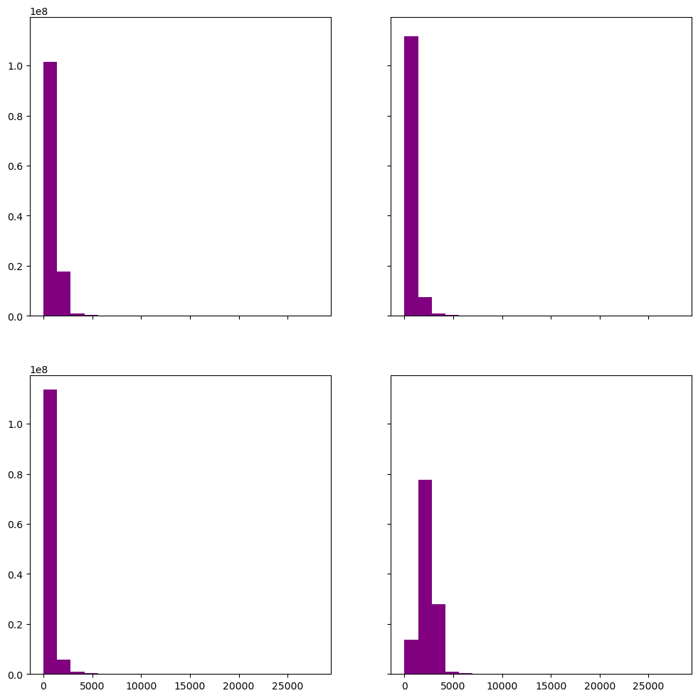
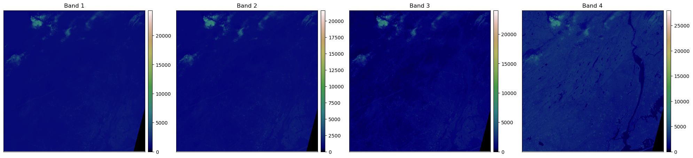
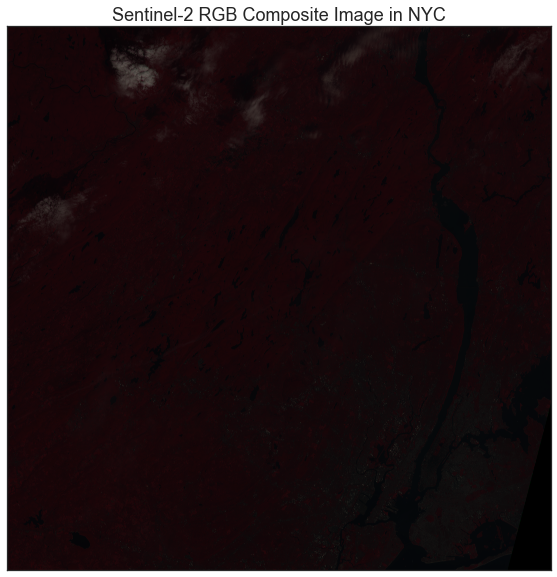
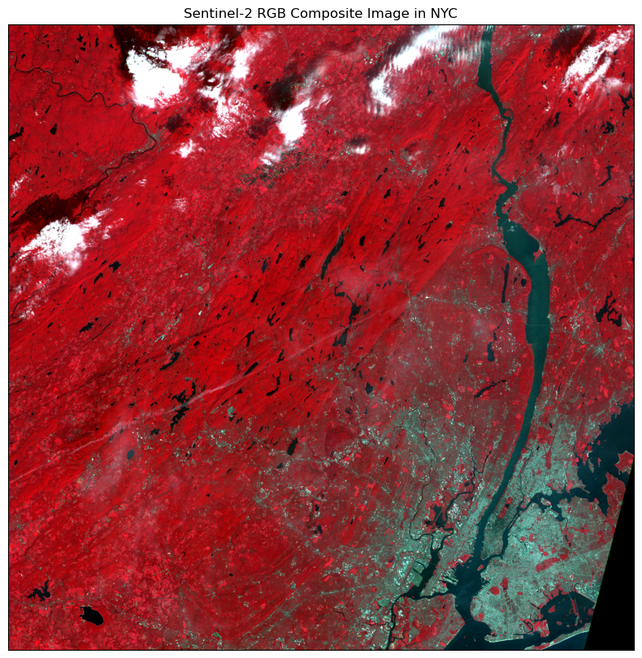
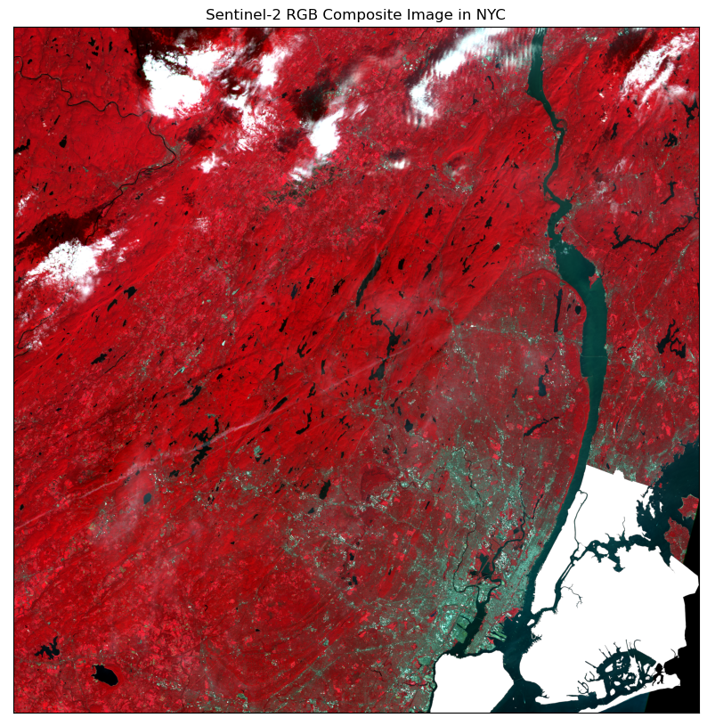
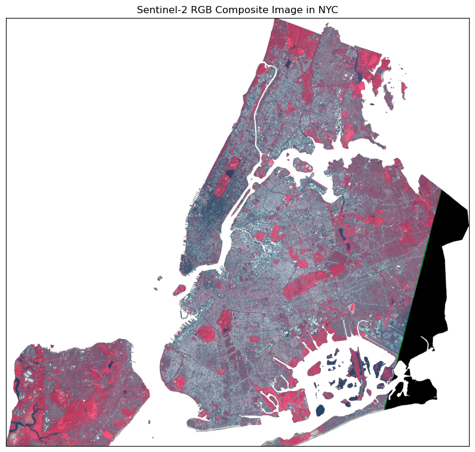
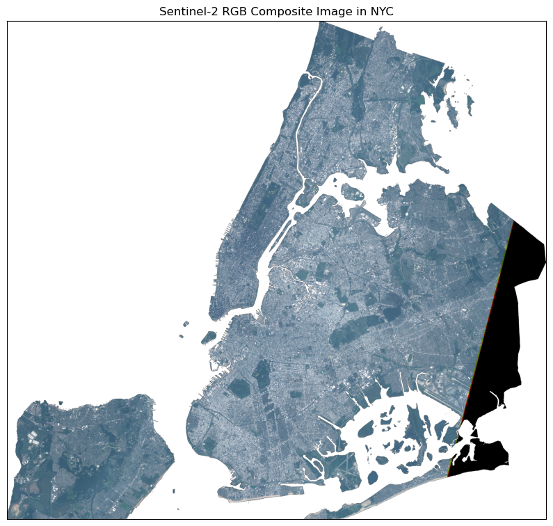
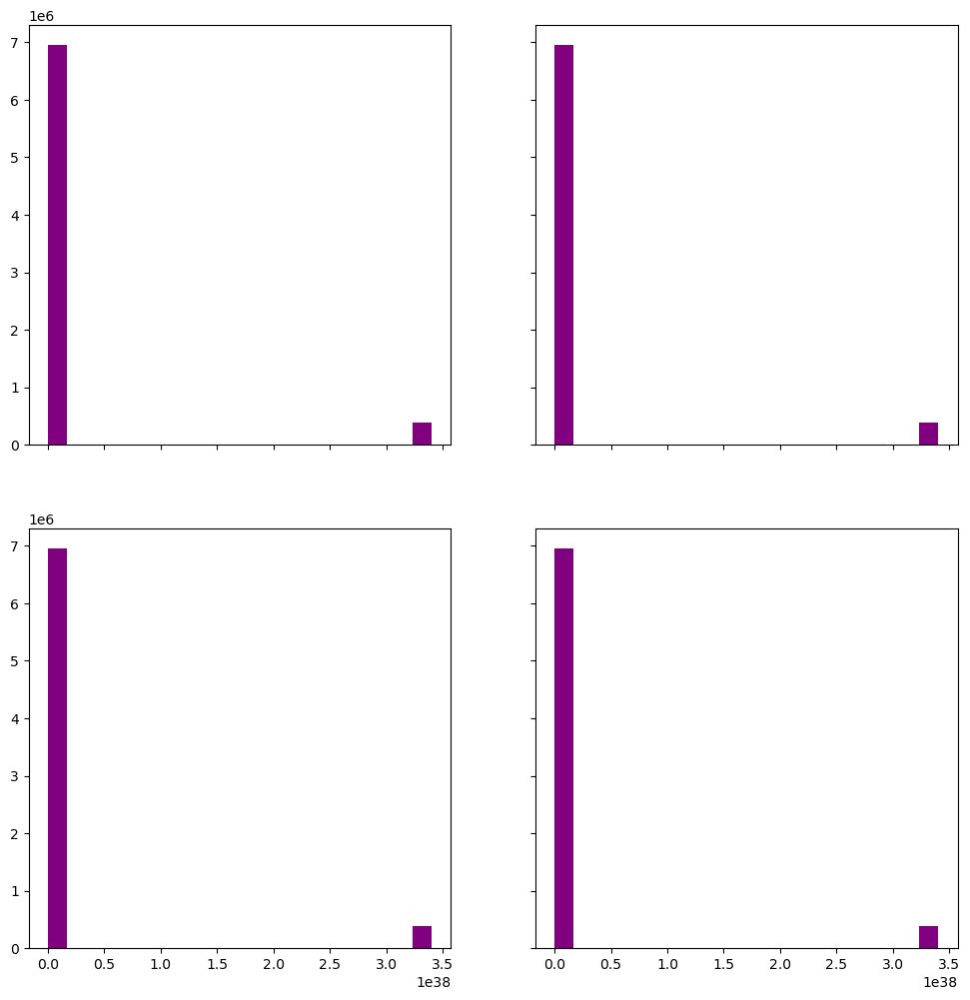
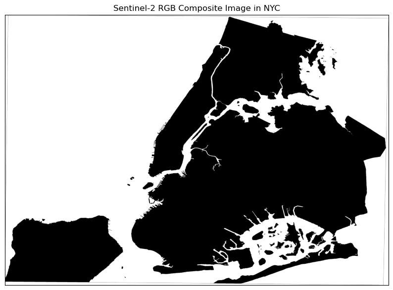

Using Rioxarray to process Sentinel-2 data - Mulitple Bands - v2
Table of Contents#
Practice rioxarray
[Reprojection]

Using Rioxarray to process Sentinel-2 data - Mulitple Bands - v2
Practice rioxarray
[Reprojection]
# Import necessary packages
import os
import numpy as np
import matplotlib.pyplot as plt
#import seaborn as sns
from shapely.geometry import mapping
# Use geopandas for vector data and xarray for raster data
import geopandas as gpd
import xarray as xr
import rioxarray as rxr
import earthpy as et
import earthpy.spatial as es
import earthpy.plot as ep
# Prettier plotting with seaborn
#sns.set(font_scale=1.5, style="white")
C:\Users\Wenge\miniforge3\envs\sds\Lib\site-packages\earthpy\__init__.py:7: UserWarning: pkg_resources is deprecated as an API. See https://setuptools.pypa.io/en/latest/pkg_resources.html. The pkg_resources package is slated for removal as early as 2025-11-30. Refrain from using this package or pin to Setuptools<81.
from pkg_resources import resource_string
l = []
pth = r'C:\Users\Wenge\Dropbox (Hunter College)\data\EDS2022F\NYCimg\Sentinel-2\IMG_DATA'
#r'D:\Wenge\Teaching\GTECH\GTECH385&785_2021F\data\NYCimg\SL1C\IMG_DATA'
chm_path= os.path.join(pth,'T18TWL_20210912T154911_B02.jp2')
l.append(rxr.open_rasterio(chm_path))
chm_path= os.path.join(pth,'T18TWL_20210912T154911_B03.jp2')
l.append(rxr.open_rasterio(chm_path))
chm_path= os.path.join(pth,'T18TWL_20210912T154911_B04.jp2')
l.append(rxr.open_rasterio(chm_path))
chm_path= os.path.join(pth,'T18TWL_20210912T154911_B08.jp2')
l.append(rxr.open_rasterio(chm_path, masked=True))
# Turn list of bands into a single xarray object
bands_10m = xr.concat(l, dim="band")
bands_10m
---------------------------------------------------------------------------
KeyError Traceback (most recent call last)
File ~\miniforge3\envs\sds\Lib\site-packages\xarray\backends\file_manager.py:219, in CachingFileManager._acquire_with_cache_info(self, needs_lock)
218 try:
--> 219 file = self._cache[self._key]
220 except KeyError:
File ~\miniforge3\envs\sds\Lib\site-packages\xarray\backends\lru_cache.py:56, in LRUCache.__getitem__(self, key)
55 with self._lock:
---> 56 value = self._cache[key]
57 self._cache.move_to_end(key)
KeyError: [<function open at 0x0000024157238D60>, ('C:\\Users\\Wenge\\Dropbox (Hunter College)\\data\\EDS2022F\\NYCimg\\Sentinel-2\\IMG_DATA\\T18TWL_20210912T154911_B02.jp2',), 'r', (('sharing', False),), 'cdcce5a4-aa8a-48c5-b713-3497e2dfa9ad']
During handling of the above exception, another exception occurred:
CPLE_OpenFailedError Traceback (most recent call last)
File rasterio\\_base.pyx:310, in rasterio._base.DatasetBase.__init__()
File rasterio\\_base.pyx:221, in rasterio._base.open_dataset()
File rasterio\\_err.pyx:359, in rasterio._err.exc_wrap_pointer()
CPLE_OpenFailedError: C:\Users\Wenge\Dropbox (Hunter College)\data\EDS2022F\NYCimg\Sentinel-2\IMG_DATA\T18TWL_20210912T154911_B02.jp2: No such file or directory
During handling of the above exception, another exception occurred:
RasterioIOError Traceback (most recent call last)
Cell In[2], line 5
3 #r'D:\Wenge\Teaching\GTECH\GTECH385&785_2021F\data\NYCimg\SL1C\IMG_DATA'
4 chm_path= os.path.join(pth,'T18TWL_20210912T154911_B02.jp2')
----> 5 l.append(rxr.open_rasterio(chm_path))
6 chm_path= os.path.join(pth,'T18TWL_20210912T154911_B03.jp2')
7 l.append(rxr.open_rasterio(chm_path))
File ~\miniforge3\envs\sds\Lib\site-packages\rioxarray\_io.py:1135, in open_rasterio(filename, parse_coordinates, chunks, cache, lock, masked, mask_and_scale, variable, group, default_name, decode_times, decode_timedelta, band_as_variable, **open_kwargs)
1133 else:
1134 manager = URIManager(file_opener, filename, mode="r", kwargs=open_kwargs)
-> 1135 riods = manager.acquire()
1136 captured_warnings = rio_warnings.copy()
1138 # raise the NotGeoreferencedWarning if applicable
File ~\miniforge3\envs\sds\Lib\site-packages\xarray\backends\file_manager.py:201, in CachingFileManager.acquire(self, needs_lock)
186 def acquire(self, needs_lock: bool = True) -> T_File:
187 """Acquire a file object from the manager.
188
189 A new file is only opened if it has expired from the
(...) 199 An open file object, as returned by ``opener(*args, **kwargs)``.
200 """
--> 201 file, _ = self._acquire_with_cache_info(needs_lock)
202 return file
File ~\miniforge3\envs\sds\Lib\site-packages\xarray\backends\file_manager.py:225, in CachingFileManager._acquire_with_cache_info(self, needs_lock)
223 kwargs = kwargs.copy()
224 kwargs["mode"] = self._mode
--> 225 file = self._opener(*self._args, **kwargs)
226 if self._mode == "w":
227 # ensure file doesn't get overridden when opened again
228 self._mode = "a"
File ~\miniforge3\envs\sds\Lib\site-packages\rasterio\env.py:463, in ensure_env_with_credentials.<locals>.wrapper(*args, **kwds)
460 session = DummySession()
462 with env_ctor(session=session):
--> 463 return f(*args, **kwds)
File ~\miniforge3\envs\sds\Lib\site-packages\rasterio\__init__.py:356, in open(fp, mode, driver, width, height, count, crs, transform, dtype, nodata, sharing, opener, **kwargs)
353 path = _parse_path(raw_dataset_path)
355 if mode == "r":
--> 356 dataset = DatasetReader(path, driver=driver, sharing=sharing, **kwargs)
357 elif mode == "r+":
358 dataset = get_writer_for_path(path, driver=driver)(
359 path, mode, driver=driver, sharing=sharing, **kwargs
360 )
File rasterio\\_base.pyx:312, in rasterio._base.DatasetBase.__init__()
RasterioIOError: C:\Users\Wenge\Dropbox (Hunter College)\data\EDS2022F\NYCimg\Sentinel-2\IMG_DATA\T18TWL_20210912T154911_B02.jp2: No such file or directory
# View the Coordinate Reference System (CRS) & spatial extent
print("The CRS for this data is:", bands_10m.rio.crs)
print("The spatial extent is:", bands_10m.rio.bounds())
# View no data value
print("The no data value is:", bands_10m.rio.nodata)
The CRS for this data is: EPSG:32618
The spatial extent is: (499980.0, 4490220.0, 609780.0, 4600020.0)
The no data value is: None
print("the minimum raster value is: ", np.nanmin(bands_10m.values))
print("the maximum raster value is: ", np.nanmax(bands_10m.values))
the minimum raster value is: 0.0
the maximum raster value is: 28000.0
ep.hist(bands_10m.values)
(<Figure size 1200x1200 with 4 Axes>,
array([[<Axes: >, <Axes: >],
[<Axes: >, <Axes: >]], dtype=object))

type(bands_10m)
xarray.core.dataarray.DataArray
ep.plot_bands(bands_10m.values,
cmap = 'gist_earth',
figsize = (20, 12),
cols = 4,
cbar = True)
plt.show()

# It takes a very long long time to make this image. Be patient!
ep.plot_rgb(bands_10m.values,
rgb=[3, 2, 1], stretch=True,
title="Sentinel-2 RGB Composite Image in NYC")
plt.show()

# Load vector layer
from geodatasets import get_path # need to install geodatasets first
path_to_data = get_path('nybb')
nybb = gpd.read_file(path_to_data)
print(nybb.crs)
print(bands_10m.rio.crs)
nybb_reproj = nybb.to_crs('EPSG:32618')
print(nybb_reproj.crs)
epsg:2263
EPSG:32618
EPSG:32618
# two ways to clip: one reproject shape file to the image.crs or reproject image to shape.crs
# none is working
# option 1
#nybb_reproj = nybb.to_crs('EPSG:32618')
#bands_10m_clipped1 = bands_10m.rio.clip(nybb.geometry.apply(mapping), nybb_reproj.crs)
# option 2
#bands_10m_reproj = bands_10m.rio.reproject('EPSG:2263')
#bands_10m_clipped2 = bands_10m_reproj.rio.clip(nybb.geometry.apply(mapping), nybb.crs)
## subsetting
bands_10m_clipped = bands_10m.rio.clip(nybb.geometry.apply(mapping), nybb.crs)
ep.plot_rgb(bands_10m.values,
rgb=[3, 2, 1],stretch = True,
title="Sentinel-2 RGB Composite Image in NYC")
plt.show()

bands_10m_clipnomask = bands_10m.rio.clip(nybb.geometry.values, nybb.crs, drop=False, invert=True)
ep.plot_rgb(bands_10m_clipnomask.values,
rgb=[3, 2, 1],stretch = True,
title="Sentinel-2 RGB Composite Image in NYC")
plt.show()

ep.plot_rgb(bands_10m_clipped.values,
rgb=[3, 2, 1], stretch=True, str_clip=1,
title="Sentinel-2 RGB Composite Image in NYC")
plt.show()

ep.plot_rgb(bands_10m_clipped.values,
rgb=[2, 1, 0], stretch=True, str_clip=1,
title="Sentinel-2 RGB Composite Image in NYC")
plt.show()

# save into a geotiff file
# pth = r'c:\Dropbox (Hunter College)\Teaching\GTECH\2022F_385785\output\sentinel2_clipped_nybb_a.tif'
pth = 'sentinel2_clipped_nybb_a.tif'
bands_10m_clipped.rio.to_raster(pth)
pth = 'sentinel2_clipped_nybb_a.tif'
bands_10m_clipped = rxr.open_rasterio(pth)
ep.plot_rgb(bands_10m_clipped.values,
rgb=[3, 2, 1], stretch=True, str_clip=1,
title="Sentinel-2 RGB Composite Image in NYC")
plt.show()
C:\Users\Wenge\miniconda3\envs\geospatial\lib\site-packages\earthpy\spatial.py:561: RuntimeWarning: invalid value encountered in cast
return (bytedata.clip(low, high) + 0.5).astype("uint8")
bands_10m_clipped.rio.crs
CRS.from_epsg(32618)
# Reprojection, does not work
#bands_latlon = bands_10m_clipped.rio.reproject("EPSG:4326")
bands_latlon = bands_10m_clipped.rio.reproject("EPSG:4326")
bands_latlon.rio.crs
CRS.from_epsg(4326)
ep.hist(bands_latlon.values)
(<Figure size 1200x1200 with 4 Axes>,
array([[<Axes: >, <Axes: >],
[<Axes: >, <Axes: >]], dtype=object))

ep.plot_rgb(bands_latlon.values,
rgb=[3, 2, 1], stretch=True, str_clip=1,
title="Sentinel-2 RGB Composite Image in NYC")
plt.show()
